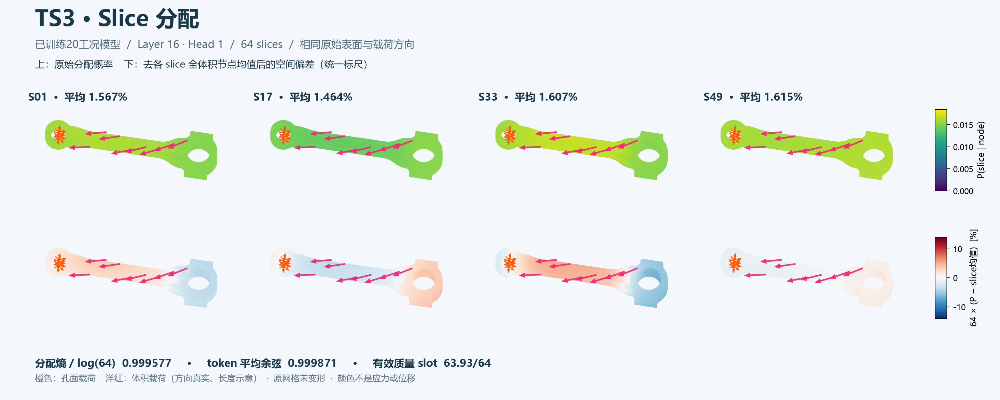
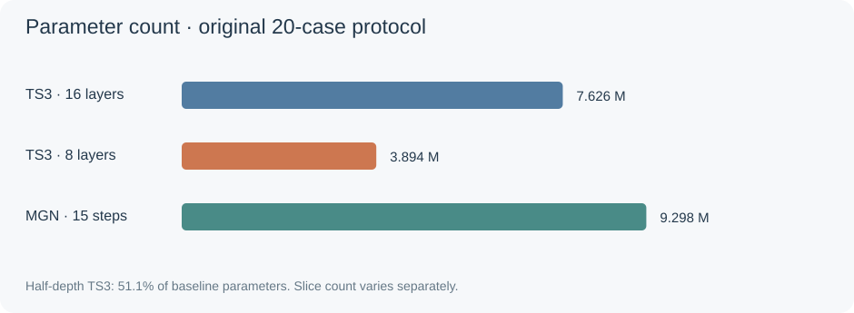
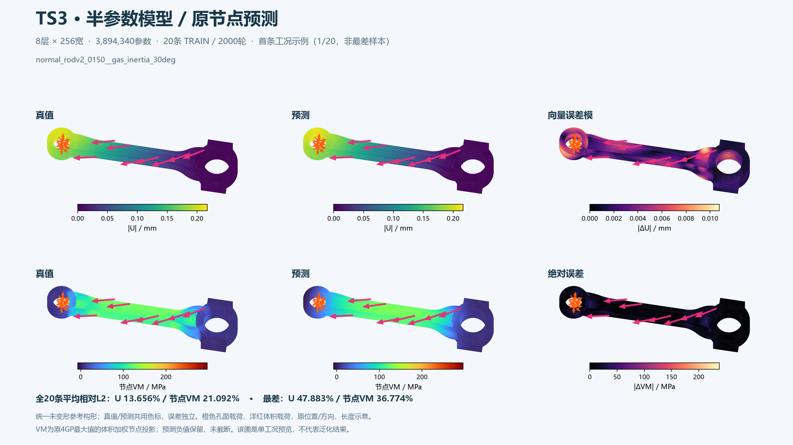

01
展示说明
联动比较真值、预测与绝对误差。默认展示当前训练子集中联合相对误差最大的样本。

查看全部64个slice · 可旋转模型 ↗ 16层、8个head均可切换；图来自已训练的20条模型。
联动比较真值、预测与绝对误差。默认展示当前训练子集中联合相对误差最大的样本。
训练已完成；多工况中的大变形位移仍有明显欠拟合，应力也保留偏差。当前结果只说明训练拟合，不能推断泛化。
审阅者：Codex（AI） · 基于已保存结果与导出核验记录
三组均完成固定2000轮；已核对曲线、保存预测、原节点指标和推理权重。20条实验位移平均/最差L2为14.875%/51.994%，节点VM为20.883%/35.960%。这说明本次预算下多工况响应尚未被充分拟合，不能只展示单例误差而称所有工况均已拟合。网络输出没有施加应力非负约束，逐例记录保留了负预测值，显示未通过裁零隐藏。未使用误差通过线，也未评估泛化。
已保存checkpoint：20条TS3过拟合、2000轮、16层×256宽、8头、每头64 slices。本轮仅对normal_rodv2_0150__gas_inertia_30deg的33555个原节点做CPU推理；图显示16842个原始表面节点，无CUDA训练。
Layer16/Head1：归一化节点分配熵0.999577，token平均余弦0.999871，有效质量slot63.932/64，中心化token有效秩1.071（上限32）。这例显示显著均匀化/同质化迹象；质量分布均衡不等于表示丰富，且这些连续量不是预设坍缩通过线。
单例不能证明全部20工况都坍缩，也未证明误差的唯一原因。按用户最新指示，改为原20条的1/2/4/8/16/32数量消融及8层半参数对照；64旧基线复用。当前实际进度与参数表见下。
可视化采用统一颜色标尺；“空间偏差”另行去每slice全体积节点均值。受力箭头复用C04的原始位置、方向与三维形状，长度仅示意。原始float32表面概率保存在本地；网页量化误差最大2.54e-5。
新增实验已完成3/7组；原64-slice与MGN基线复用，不重复计入新增组数。

先比较8层、64 slices的半参数TS3，再依次训练16层的1/2/4/8/16/32 slices；原64-slice及MGN结果复用。每组2000轮、相同20条与原训练配方，不设误差通过线。

| 模型 | 实际参数 | U平均 / 最差L2 | 节点VM平均 / 最差L2 |
|---|---|---|---|
| TS3 16层 / 1 slices | 7,593,108 | 13.342% / 47.911% | 20.196% / 35.249% |
| TS3 16层 / 2 slices | 7,593,636 | 14.425% / 50.164% | 21.129% / 35.823% |
| TS3 16层 / 4 slices | 7,594,692 | 训练中 555/2000轮，尚无最终指标 | 训练中 555/2000轮，尚无最终指标 |
| TS3 16层 / 8 slices | 7,596,804 | 待训练 | 待训练 |
| TS3 16层 / 16 slices | 7,601,028 | 待训练 | 待训练 |
| TS3 16层 / 32 slices | 7,609,476 | 待训练 | 待训练 |
| TS3 16层 / 64 slices | 7,626,372 | 14.875% / 51.994% | 20.883% / 35.960% |
| TS3 8层 / 64 slices | 3,894,340 | 13.656% / 47.883% | 21.092% / 36.774% |
| MGN 15步 | 9,298,436 | 2.117% / 4.089% | 11.238% / 15.898% |
AI审阅：改变slice数量几乎不改变整体容量；8层对照将参数减至原来的51.1%，用于区分网络容量与slice划分的影响。1-slice时分配softmax恒为1，表中仍按名义可训练参数计数。待训练项无结果，不能用于推断OF效果。原64初值是按匹配源码、seed与Torch重建，并非当时归档的初始权重。
参数、实际结果与队列快照JSON全部已完成组的逐例指标CSV · S001 推理权重 · S002 推理权重 · H064 推理权重
2-slice审阅：完整2000轮，用时102.43分钟，U平均/最差14.425%/50.164%，节点VM平均/最差21.129%/35.823%。本轮两项平均训练误差高于1-slice组；增加slice尚未带来一致改善，数量选择需结合全部对照曲线。这里只报告固定预算TRAIN拟合，不作泛化或坍缩因果结论。
1-slice审阅：完整2000轮，用时84.84分钟，U平均/最差13.342%/47.911%，节点VM平均/最差20.196%/35.249%。这次1-slice的两项平均训练误差均略低于64-slice基线；尚不能据此证明训练坍缩的原因，继续比较其余slice数量。1-slice分配恒1是数学定义，不能当作训练导致的坍缩。
AI审阅更新：半深度组完成2000轮，用时60.35分钟，为原16层组的50.3%。U平均/最差为13.656%/47.883%，节点VM为21.092%/36.774%。本次固定预算下位移略有改善、节点VM略有增加；不是泛化结果，不能据此认定slice坍缩的原因。

7,626,372个参数，16层×256宽、8头、64 slices。共3组，已完成3/3组；两模型共享R06嵌套样本、标签与全节点评价口径。
不设误差通过线，不按误差阈值早停。每组独立初始化，固定2000个全组梯度累积epoch，即每条样本2000次前后向。一次优化器更新累积该组所有样本梯度；损失为等样本权重的位移向量相对平方L2与投影VM相对平方L2平均。保存完整训练曲线、逐例实际误差及checkpoint；这里只测训练拟合，不证明泛化。
探索版网络为TS3 991,044参数／MGN 901,636参数，结果和checkpoint保留在独立历史。此版本扩大网络，并改用位移向量损失与全组梯度累积，避免逐分量损失对很小位移分量的放大；两版配置与结果分开记录。
实时快照/结果JSON · 同一数据接口 · 配置

每条更新2000次；最佳训练目标checkpoint在1950轮；耗时5.76分钟。U平均/最差L2误差0.851% / 0.851%；投影VM平均/最差4.490% / 4.490%。只记录这些实测值，不附加通过/未通过判定。
下载推理权重（含输入/输出尺度与配置）含优化器/RNG的完整可恢复训练checkpoint保留在本地run目录。

每条更新2000次；最佳训练目标checkpoint在2000轮；耗时29.43分钟。U平均/最差L2误差3.850% / 9.510%；投影VM平均/最差13.021% / 15.614%。只记录这些实测值，不附加通过/未通过判定。
下载推理权重（含输入/输出尺度与配置）含优化器/RNG的完整可恢复训练checkpoint保留在本地run目录。

每条更新2000次；最佳训练目标checkpoint在2000轮；耗时120.09分钟。U平均/最差L2误差14.875% / 51.994%；投影VM平均/最差20.883% / 35.960%。只记录这些实测值，不附加通过/未通过判定。
下载推理权重（含输入/输出尺度与配置）含优化器/RNG的完整可恢复训练checkpoint保留在本地run目录。

训练曲线、预测/真值/误差图、checkpoint
训练曲线、预测/真值/误差图、checkpoint
按用户指定的1/5/20条样本记录训练误差、曲线和checkpoint，不设误差通过线
尚未录入结果。首条交付后，链接固定保留在本页。
尚未录入；后续记录与每日更新一同追加。
正在读取记录…